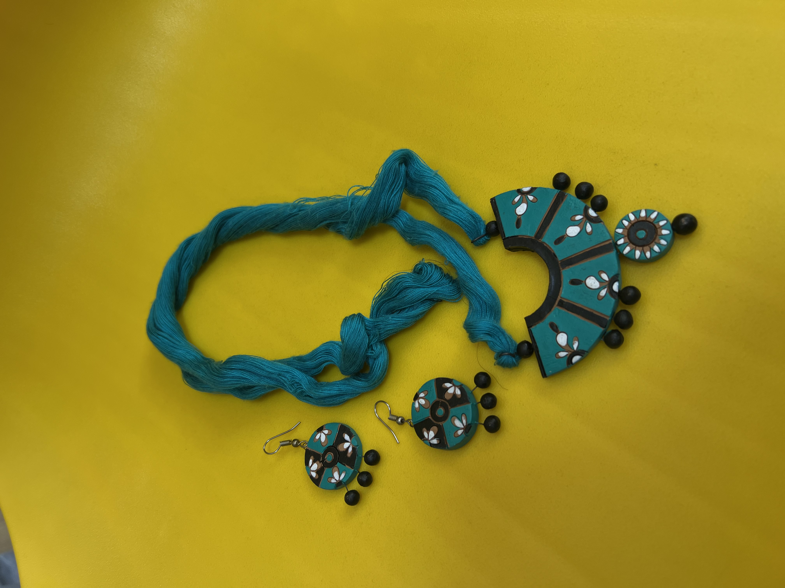
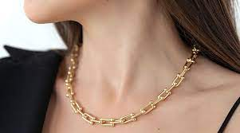

Organic jewelry made from natural materials and free from harmful chemicals is popular among environmentally conscious consumers.
qqqq
Handmade organic jewelry by skilled artisans is unique and supports local communities, preserving traditional craftsmanship.
Organic jewelry is also a great choice for those with sensitive skin. Many people are allergic to the metals and chemicals found in traditional jewelry, but organic jewelry is free from these irritants, making it a safer and more comfortable choice for those with sensitive skin.
